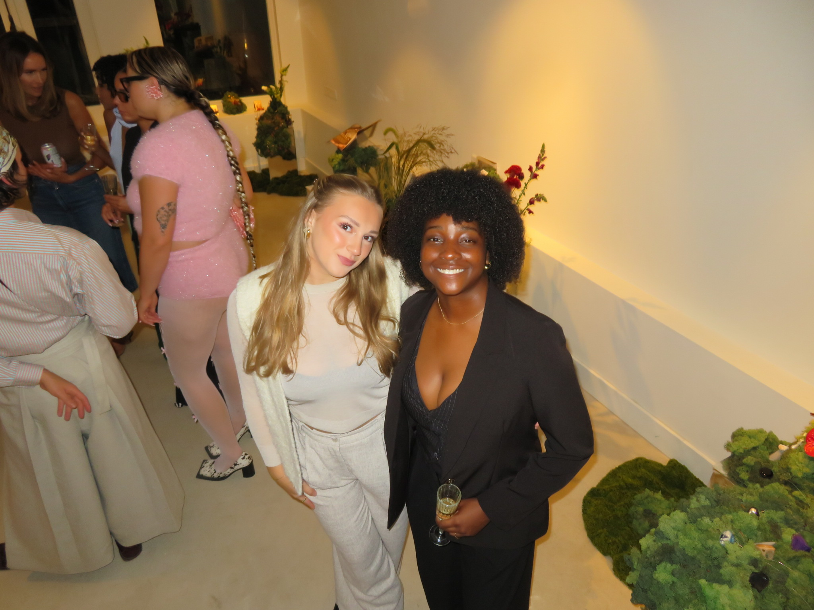
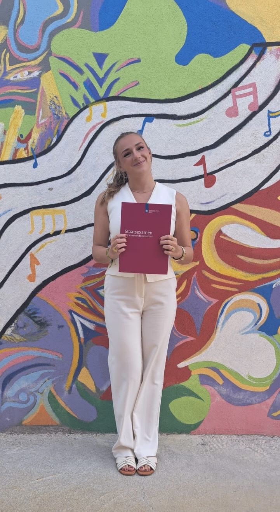

Binnenkort
Mijn WPL-blog
Hier zal ik op een eerlijke en duidelijke manier tonen wat ik leer, wat mij uitdaagt en hoe ik mijn professionele identiteit verder opbouw.
Mijn WPL-traject is nog niet gestart. Daarom is deze pagina bewust opgebouwd als een groeipagina die later aangevuld wordt met ervaringen uit WPL1 en WPL2.


Omdat WPL1 en WPL2 nog moeten starten, staat hier nog geen echte stage-inhoud. Wel staat de structuur klaar, zodat ik later wekelijks mijn ervaringen en reflecties kan toevoegen.
Hier zal ik op een eerlijke en duidelijke manier tonen wat ik leer, wat mij uitdaagt en hoe ik mijn professionele identiteit verder opbouw.
Wat heb ik deze week gedaan? Welke taken, gesprekken of inzichten waren belangrijk?
Wat ging goed, waar liep ik tegenaan en welke feedback neem ik mee naar de volgende week?
Welke vaardigheden ontwikkel ik verder, zoals communicatie, initiatief nemen, samenwerken of plannen?
Wanneer mogelijk voeg ik later beeldmateriaal, opdrachten of korte updates toe die mijn leerproces ondersteunen.
“Deze website is geen eindpunt, maar een startpunt: een plek waar mijn persoonlijke en professionele groei zichtbaar wordt.”